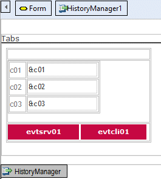
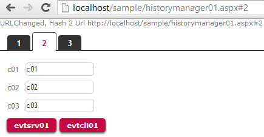

The HistoryManager User Control listens for changes in the URL. Every time a change occurs, it triggers the event URLChanged. Changes in the URL that are monitored are those that occur after the # (hash). Using the controlThe HistoryManager User Control is widely used in the Work With Pattern (TabbedView Web Component) to dynamically load a GeneXus object based on the user tab selection without losing the deep linking, ie without losing the browser back and forward options and the ability to copy the link as is and pass it to another user to access exactly the same page. MethodsURLChanged: Notifies that the URL changed. ExampleSuppose the following WebPanel definition  The Tabs Textblock will be in charge of loading a list of three tabs (Start Event, Init and DummyTabs subroutines). Event Start Do 'Init' Do 'DummyTabs' EndEvent Sub 'DummyTabs' &Tabs = new() for &i = 1 to 3 // 3 tabs &Tab = new() &Tab.Code = &i.toString().Trim() &Tab.Description = &i.ToString().Trim() &Tabs.Add(&Tab) endfor &LastTab = &Tabs.Count EndSub Sub 'Init' &TabTemplate = !'<li class="%1">' &TabTemplate += !'<a id="%2Tab" %3%7 class="%4">' &TabTemplate += !'<span class="%5">' &TabTemplate += !'<span class="TabBackground">' &TabTemplate += !'<span class="TabText">%6</span>' &TabTemplate += !'</span>' &TabTemplate += !'</span>' &TabTemplate += !'</a>' &TabTemplate +=!'</li>' EndSub Every time the user clicks on a tab, the HistoryManager will trigger the URLChanged method to notify the change; you need to update the component displaying the desired content and update the tab strip (the list of tabs) to reflect the selection (Draw Tabs subroutine).
Event HistoryManager1.URLChanged
msg(format(!"URLChanged, Hash %2 Url %1",HistoryManager1.URL,HistoryManager1.Hash))
Do 'Draw Tabs'
&URLChangedEvent = True // check the refresh code
EndEvent
Event Refresh
If not &URLChangedEvent
Do 'Draw Tabs'
EndIf
EndEvent
Sub 'Draw Tabs'
Do 'FindTabIndex'
&IsFirstTab = True
&TabsMarkup = ""
For &Index = 1 To 3
&Tab = &Tabs.Item(&Index)
Do 'LoadItem'
&IsFirstTab = False
Endfor
Tabs.Caption = Format(!'<ul class="Tabs">%1</ul>', &TabsMarkup)
EndSub
Sub 'FindTabIndex'
// Searches for the tab with the specified code.
// If not found, or code is empty, returns first tab.
&Found = False
For &Index = 1 to &Tabs.Count
If (HistoryManager1.Hash = "" And (&Tabs.Item(&Index).Code = &TabCode)) Or (&Tabs.Item(&Index).Code = HistoryManager1.Hash)
&SelectedTab = &Index
&Found = True
Exit
EndIf
EndFor
If (not &Found and &Tabs.Count > 0)
&SelectedTab = 1
EndIf
EndSub
Sub 'LoadItem'
&TabLeftCls = !"TabLeft"
if &Index = &FirstTab
&TabLeftCls = !"TabFirst"
EndIf
&TabRightCls = !"TabRight"
If &Index = &LastTab
&TabRightCls = !"TabLast"
EndIf
If &Index = &SelectedTab
&TabsMarkup += Format(&TabTemplate, !"Tab TabSelected", &Tab.Code, "", &TabLeftCls, &TabRightCls, &Tab.Description, "")
Else
// Add the item as an entry point in the HistoryManager to enable the browser go back and forward.
&OnClickTemplate = !' onclick="return HistoryManager.AddHistoryPoint(' + !"'%1'" + !')"'
&TabsMarkup += Format(&TabTemplate, !"Tab", &Tab.Code, Format(!'href="%1"', &Tab.Link), &TabLeftCls, &TabRightCls, &Tab.Description, Format(&OnClickTemplate, &Tab.Code))
EndIf
EndSub
At runtime, 3 tabs will be created:  and when clicking on each tab, the hashtag will be updated with the &Tab.Code value (#1,#2,#3).
|
| Backlinks |
| Category:Common Controls |